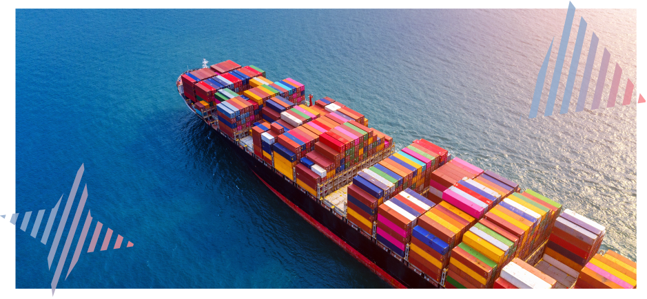
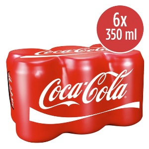
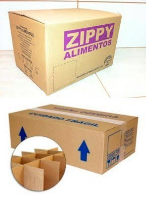
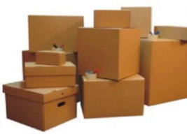
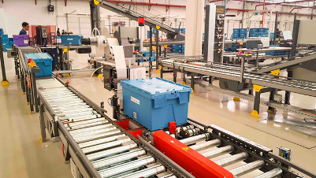

Aguarde enquanto o conteúdo é carregado.
No mundo da logística e do transporte de mercadorias, compreender os tipos de cargas e suas classificações é fundamental para garantir a segurança, a eficiência e o cumprimento das normas internacionais. A classificação International Maritime Dangerous Goods (IMDG), que em português significa “Código Marítimo Internacional para Cargas Perigosas”, é um dos pilares que rege o transporte seguro de mercadorias perigosas pelo mar, estabelecendo diretrizes fundamentais que profissionais da área devem seguir à risca.
Além disso, as embalagens desempenham um papel vital na proteção dos produtos durante o transporte e armazenamento e suas funções variam conforme o tipo de carga e o meio de transporte utilizado. A correta escolha e utilização das embalagens é essencial não apenas para a integridade da mercadoria, mas também para otimizar processos logísticos e reduzir custos.
Por fim, a unitização e desunitização de cargas – incluindo processos como paletização – são práticas que facilitam o manuseio, o transporte e o armazenamento das mercadorias. A correta implementação dessas técnicas impacta diretamente a eficiência das operações logísticas, tornando o fluxo de mercadorias mais ágil e seguro.
Neste conteúdo, esses temas serão explorados em detalhes, oferecendo uma visão abrangente e prática para que você compreenda como cada um desses elementos se integra ao complexo sistema logístico global.
O sistema de classificação de mercadorias perigosas no transporte marítimo é uma norma internacional desenvolvida pela Organização Marítima Internacional (IMO) para garantir a segurança no transporte de mercadorias perigosas por mar.
A logística lida com uma ampla variedade de produtos, e cada tipo de produto tem suas características próprias de carregamento, manuseio e armazenamento. Esses diferentes tipos de carga determinarão os modais que poderão ser contratados e as rotinas de transporte, e estarão sujeitos até mesmo às legislações específicas de determinados tipos de cargas.
As mercadorias perigosas são classificadas em diferentes classes, cada uma representando um tipo específico de perigo, como: explosivos, gases, líquidos inflamáveis, substâncias sólidas inflamáveis, agentes oxidantes e peróxidos orgânicos, substâncias tóxicas e infecciosas, materiais radioativos, substâncias corrosivas, substâncias e artigos perigosos diversos.
São cargas de produtos que perdem ou alteram suas propriedades de acordo com o meio a que estão expostas: umidade, temperatura e pressão. Essa característica exige que o prazo de validade dos produtos deva ser declarado na maior parte das formas de transporte e modal, principalmente no caso de medicamentos. Assim, as embalagens têm um papel muito importante, devendo ser adequadas e adaptadas ao produto transportado, exercendo também uma importante função informativa. Exemplos de produtos classificados como cargas perecíveis são medicamentos, órgãos para transplante, alimentos, frutas etc.
Refere-se ao transporte de animais de qualquer espécie. Para isso, o animal deverá estar saudável e os equipamentos devem ser adequados de forma que a necessidade de uso de tranquilizantes seja minimizada. Em caso de uso de tranquilizantes, a carga animal deverá ter um laudo do veterinário responsável informando qual o medicamento, a duração e a data da aplicação do sedativo. Ao transportar animais silvestres, deverá ser emitida autorização pelo Instituto Brasileiro do Meio Ambiente e dos Recursos Naturais Renováveis (Ibama). É importante reforçar que o transporte de animais silvestres, sem as devidas autorizações, é crime.
Essas cargas devem ser identificadas com o símbolo de produto frágil. Geralmente apresentam embalagens específicas que ajudam na acomodação do produto e garantem uma melhor integridade dos itens para que cheguem em perfeitas condições ao destino. Para a melhor acomodação, são usados materiais como isopor, serragem, plástico bolha etc. São exemplos de cargas frágeis vidros, espelhos, eletrônicos etc.
Um sinal retangular com fundo vermelho e bordas brancas. No centro, há o desenho de uma taça branca com uma rachadura em diagonal, simbolizando fragilidade. Acima da taça está escrito em letras maiúsculas brancas a palavra "frágil". Abaixo da taça está escrito "este lado para cima". O sinal indica que o item é frágil e deve ser manuseado com cuidado, mantendo a orientação correta.
O transporte de papel-moeda, de outros títulos de valor e de metais preciosos também é uma modalidade de carga. Com o aumento da criminalidade, essas cargas são transportadas por empresas cada vez mais especializadas. Os tipos de veículos mais conhecidos para esse tipo de carga são os carros-fortes, que transportam valores em espécie e fazem a logística entre os bancos. Esses veículos também são utilizados, muitas vezes, em empresas que têm um volume considerável de dinheiro, por exemplo, praças de pedágio. Atualmente as cargas de valores também abastecem os bancos 24 horas distribuídos em postos, supermercados e afins.
O controle dessas cargas é feito pelo governo e pelo Exército. O exército é responsável pelo controle de produtos como armas, acessórios de armas, munições. Já o governo controla cargas como vacinas, remédios, alimentos etc.
Esses produtos são transportados geralmente em tanques, no qual o caminhão, o navio ou o trem leva um cilindro (tanque) que acondiciona a carga. Esses veículos são chamados, no caso do modal rodoviário, de caminhões-cisterna, carros-tanques ou caminhões-pipa.
Fotografia de caminhão do tipo carreta-tanque, utilizado para transporte de líquidos, estacionado em uma área aberta sob céu azul. O veículo é de grande porte, com cabine cinza, e tem dois tanques cilíndricos metálicos conectados. O caminhão tem placas vermelhas, o que sugere que está registrado como veículo de transporte de carga
Navio metaneiro do tipo LNG carrier (liquefied natural gas carrier), navegando em mar aberto. A embarcação é de grande porte, pintada predominantemente na cor laranja, e equipada com quatro tanques esféricos criogênicos visíveis no convés, utilizados para o transporte de gás natural liquefeito (GNL) a temperaturas extremamente baixas. Os tanques hemisféricos são protegidos por isolamento térmico e fixados sobre a estrutura central do navio. A superestrutura da embarcação está localizada na popa, onde se concentram a ponte de comando, os equipamentos de navegação e as instalações operacionais
Fotografia de um pátio ferroviário canadense com vários trens de carga estacionados em múltiplas linhas férreas paralelas. Em destaque, há vagões-tanque cilíndricos de cor preta, utilizados para o transporte de líquidos a granel, como combustíveis, produtos químicos ou derivados de petróleo. Os vagões estão acoplados entre si e intercalados com vagões fechados tipo boxcar (para carga seca), evidenciando a diversidade de materiais transportados no mesmo terminal. À esquerda da imagem, uma locomotiva diesel-elétrica, com pintura laranja e preta, está posicionada na linha de frente. O cenário urbano ao fundo mostra galpões logísticos e mais composições ferroviárias, caracterizando uma área de movimentação intensa e logística multimodal.
São caracterizados como cargas perigosas os produtos que oferecem risco ao meio ambiente, à saúde e à segurança. O tipo de carga é classificado de acordo com o manual Dangerous Goods Regulations (DGR). A Organização das Nações Unidas (ONU) padroniza e normatiza as cargas perigosas de acordo com o transporte e modal utilizados. O IMDG foi criado para padronizar o transporte internacional de cargas perigosas. Ele também reduz o risco de acidentes, pois exige melhores cuidados de transporte, identificação e acomodação das embalagens e cargas.
O comércio internacional amplia as dificuldades da logística de transporte, pois, além dos desafios operacionais já existentes, cada país tem suas próprias regulamentações quanto ao transporte de cargas.
No transporte marítimo, essa delimitação torna-se mais desafiadora, principalmente em águas internacionais, onde as regulamentações dos países são restritas. Para solucionar esses impasses, foi criada a Organização Marítima Internacional (IMO), sigla para “International Maritime Organization”, que regulamenta as transações de transporte marítimo utilizando códigos e procedimentos operacionais.
Uma das mais importantes padronizações diz respeito aos códigos de materiais perigosos. O IMDG (Código Marítimo Internacional das Mercadorias Perigosas) regulamenta uma importante parte relacionada ao transporte marítimo, de acordo com a Convenção Internacional para Salvaguarda da Vida Humana no Mar, de 1974.
O código divide as substâncias perigosas em diferentes classes de risco, conforme segue:
Os tipos de cargas e a classificação IMDG estão diretamente ligados aos tipos e às funções das embalagens. Isso acontece porque a natureza da carga determina como ela deve ser classificada e qual embalagem é necessária para garantir sua segurança no transporte.
A classificação IMDG estabelece regras para o transporte marítimo de mercadorias perigosas, como explosivos, gases, líquidos inflamáveis e substâncias tóxicas. Cada tipo de carga tem exigências específicas para a embalagem. Por exemplo, produtos químicos perigosos precisam de embalagens que sejam fortes, resistentes a vazamentos e capazes de lidar com reações químicas.
Portanto, a escolha da embalagem é crucial para a segurança no transporte. Identificar corretamente a carga segundo a IMDG e usar a embalagem adequada ajuda a evitar riscos e garante que os produtos cheguem ao destino em segurança e conforme as normas. A seguir, confira diferentes tipos e funções das embalagens usadas na logística.
No contexto da operação logística, as embalagens são fundamentais para proteger, manusear, armazenar e transportar de forma segura e adequada os vários tipos de cargas.
Ao se considerar embalagens, é comum que sua utilidade no marketing seja priorizada com foco em atrair e comunicar-se com o público. Aqui será abordado o conceito de embalagem sob o viés logístico, ou seja, concentrando-nos no design da embalagem industrial.
A embalagem tem uma forte relação com todas as funções logísticas, seja na armazenagem, seja no manuseio, na movimentação de materiais ou no transporte. Com a escolha adequada das embalagens, é possível conseguir uma significativa redução de custos, de perdas e no prazo de entrega. Além disso, ela também contribui para o aumento da satisfação do cliente.
Durante a movimentação de materiais, que ocorre dentro dos armazéns e também na troca de modal de transporte, podem ocorrer avarias nas embalagens. Nessa movimentação, principalmente a embalagem primária e o produto podem sofrer os impactos da falta de planejamento. Entre as consequências, portanto, estão o aumento da contratação de mão de obra pela impossibilidade de padronização dos métodos e equipamentos de movimentação, aumento do custo decorrente dessas perdas, entre outras.
Perceba o quanto as embalagens contribuem nos processos logísticos, proporcionando a proteção do produto durante todo o fluxo de armazenagem e a melhor utilização dos espaços físicos nos armazéns. Para evitar retrabalho, essas embalagens devem estar devidamente identificadas e separadas.
Ao se considerar embalagens, é comum que sua utilidade no marketing seja priorizada com foco em atrair e comunicar-se com o público. Aqui será abordado o conceito de embalagem sob o viés logístico, ou seja, concentrando-nos no design da embalagem industrial
A embalagem tem uma forte relação com todas as funções logísticas, seja na armazenagem, seja no manuseio, na movimentação de materiais ou no transporte. Com a escolha adequada das embalagens, é possível conseguir uma significativa redução de custos, de perdas e no prazo de entrega. Além disso, ela também contribui para o aumento da satisfação do cliente.
Durante a movimentação de materiais, que ocorre dentro dos armazéns e também na troca de modal de transporte, podem ocorrer avarias nas embalagens. Nessa movimentação, principalmente a embalagem primária e o produto podem sofrer os impactos da falta de planejamento. Entre as consequências, portanto, estão o aumento da contratação de mão de obra pela impossibilidade de padronização dos métodos e equipamentos de movimentação, o aumento do custo decorrente dessas perdas, entre outras.
Percebemos assim o quanto as embalagens contribuem nos processos logísticos, proporcionando a proteção do produto durante todo o fluxo de armazenagem e a melhor utilização dos espaços físicos nos armazéns. Para evitar retrabalho, essas embalagens devem estar devidamente identificadas e separadas.
Caixa principal
Quando nos referimos à embalagem, pensamos em vários formatos de produtos com necessidades diferentes a serem embalados. Desse modo, produtos individuais são agrupados em sacolas, latas ou caixas de papelão, com o objetivo de protegê-los contra danos. Esses agrupamentos recebem o nome de caixa principal.
Embalar as caixas principais em unidades maiores é o que se chama de conteinerização, assim, caixas principais e unidades de carga são consideradas unidades básicas de manuseio na logística.
Com o objetivo de determinar os requisitos de transporte e manuseio de determinada carga, é preciso conhecer, antes de mais nada, o volume, o peso e o potencial de dano de uma caixa principal, pois, se a embalagem não for cuidadosamente planejada, certamente a eficiência do sistema logístico será afetada. Disso resultarão danos à mercadoria, atrasos nas entregas e aumento dos custos de armazenagem.
Com relação ao tamanho da caixa principal, vamos considerar, por exemplo, latas de refrigerante como o produto a ser transportado. As latas de refrigerante normalmente vêm acondicionadas e vendidas no varejo em embalagens de seis unidades. Observe a figura a seguir:
Embalagem plástica com seis latas de refrigerante Coca-Cola, dispostas em duas fileiras de três unidades. A embalagem é envolta por um filme termoencolhível vermelho, característico da marca, com o logotipo “Coca-Cola” impresso em branco e em destaque. No canto superior direito da imagem, há um selo circular vermelho indicando a quantidade e o volume: "6 x 350 ml", ou seja, seis latas com 350 mililitros cada. A embalagem está projetada para facilitar o transporte e o armazenamento do produto em unidades múltiplas. Esse tipo de apresentação é comum em pontos de venda para consumo doméstico ou varejo.
Normalmente, as caixas principais acondicionam 24 unidades (24 latas de refrigerante, por exemplo), devendo ser grandes o suficiente para gerar economia de escala no transporte e no manuseio. Neste caso, não é necessário pensar na apresentação para venda da caixa principal, pois esta não é a sua finalidade, mas sim em uma padronização que facilite o manuseio e a identificação do produto. Ao agrupamento de caixas principais dá-se o nome de conteinerização. Este conceito pode ser utilizado desde o agrupamento de duas caixas principais até o uso de equipamentos de transportes especializados
Observe estes exemplos:
Imagem composta de duas caixas de papelão ondulado, utilizadas para embalagem e transporte de produtos alimentícios e itens frágeis. Na parte superior da imagem, há uma caixa com impressão em roxo com a marca "ZIPPY ALIMENTOS", apropriada para acondicionamento de produtos alimentícios industrializados. A lateral da caixa traz instruções de manuseio, identificação da empresa e espaço reservado para etiquetas de transporte. Na parte inferior, é exibida uma caixa retangular identificada com os dizeres "CUIDADO FRÁGIL" e setas indicando o lado correto para manter a embalagem na posição vertical. Há também uma ilustração em destaque (ampliada em círculo) mostrando um divisor interno de papelão, com várias células individuais, utilizado para separar e proteger itens frágeis como garrafas de vidro ou recipientes similares durante o transporte. Ambas as caixas são típicas de ambientes logísticos, armazéns e centros de distribuição, otimizando proteção e organização de cargas.
Nesses exemplos, a caixa principal foi desenvolvida especialmente com o objetivo de acondicionar, manusear e transportar os produtos que estão ali armazenados em maior quantidade, de modo a facilitar esse processo, economizando tempo e espaço.
Outro aspecto importante e que deve ser considerado quando se refere a tempo e espaço é que as caixas principais podem circular nas esteiras desde a separação dos produtos no depósito até o carregamento no caminhão, facilitando o gerenciamento desse processo.
Tamanho da embalagem
Eliminar o ar que está dentro das embalagens, concentrar itens, carregar produtos desmontados e reduzir o tamanho da embalagem são fatores que contribuem com eficiência logística.
Pensar no tamanho da embalagem é uma atividade fundamental no gerenciamento logístico, pois uma embalagem projetada especialmente para determinado produto pode evitar, por exemplo, o uso de flocos de isopor, um material auxiliar para proteção, que gera volume e acarreta custos.
Por outro lado, trabalhar com caixas principais de tamanhos diferentes exige o cuidado de torná-las adequadas, ou seja, que elas atinjam compatibilidade modular e possam ser facilmente transportadas. Analise a seguinte figura:
Imagem composta de várias caixas de papelão ondulado empilhadas e dispostas lado a lado, com diversos tamanhos e formatos. As caixas apresentam coloração parda padrão e estão fechadas com fitas adesivas, algumas delas acompanhadas de itens de escritório ou objetos pequenos colocados sobre suas tampas, como canetas em copos. Há caixas grandes destinadas ao armazenamento ou transporte de objetos volumosos, bem como caixas menores para itens leves ou frágeis. Uma das caixas, na parte frontal esquerda, tem uma alça vazada, típica de modelos utilizados para arquivamento. A composição sugere um ambiente de mudança, armazenamento ou organização de estoque.
Essa figura ilustra o conceito de compatibilidade modular, ou seja, todas as caixas são empilháveis e se encaixam formando um quadrado.
Outro exemplo de planejamento logístico é o da empresa Sofá na Caixa, que, pensando na minimização do volume, transporta e comercializa seus sofás embalados a vácuo, conforme a imagem a seguir.
Vista de cima de um canto de sala de estar moderno e luminoso. No centro, um sofá modular cinza-claro, de tecido texturizado e design minimalista, está disposto em forma de L. O sofá tem almofadas tufadas e duas almofadas decorativas quadradas, uma laranja e outra bege, adicionam um toque de cor. Em frente ao sofá, sobre um tapete redondo com um padrão vibrante de arcos coloridos em tons de rosa, laranja, vermelho e azul, encontra-se uma grande caixa de papelão retangular. A caixa tem a inscrição 'sofa na caixa' em letras brancas grandes, sugerindo que o sofá foi entregue dentro da caixa fechada a vácuo.
Trocar embalagens de vidro por plástico é outra estratégia logística, uma vez que o plástico é mais leve, além de aumentar significativamente o espaço para transportá-las em um caminhão, reduzindo assim custos de transporte.
Embalagens plásticas
As embalagens plásticas podem ser divididas em flexíveis e inflexíveis, e os tipos mais utilizados são: envelopes, sacos, sacolas, engradados, galões e frascos, e geralmente podem ser moldados em diversos formatos e tamanhos.
Um dos grandes benefícios da embalagem plástica é a resistência, possibilitando maior nível de empilhamento, utilizando melhor o espaço de armazenagem.
Fotografia de um centro de distribuição automatizado, onde diversas embalagens plásticas reutilizáveis de cor azul (do tipo caixa contêiner) são transportadas por um sistema de esteiras e roletes metálicos. As caixas são robustas, com tampas articuladas e etiquetas de identificação, utilizadas para o armazenamento e movimentação de produtos. No primeiro plano, uma caixa azul está sendo processada por uma máquina etiquetadora automática, que imprime e aplica etiquetas de rastreamento. Ao fundo, outras caixas plásticas semelhantes percorrem a linha em diferentes pontos do sistema logístico
A unitização consiste em agrupar mercadorias em uma única unidade de carga padronizada, otimizando seu manuseio, seu transporte e sua armazenagem. Esse processo usa recipientes rígidos e flexíveis, que são essenciais para consolidar e facilitar a movimentação dos produtos. Entenda mais sobre esses recipientes a seguir.
O uso de recipientes rígidos possibilita a unitização, permitindo que caixas já embaladas e produtos que estavam avulsos sejam agrupados em uma única unidade de carga.
Nos transportes aéreos ou hidroviários, o uso de contêineres, que são manuseados e transportados por equipamentos especiais, é uma prática amplamente utilizada. O contêiner, que pode ser de metal ou de madeira, tem dimensões e outras características padronizadas que facilitam o embarque, o desembarque e o transbordo em diferentes meios de transporte
Algumas das vantagens do uso de recipientes rígidos são:
A seguinte imagem representa o uso de contêineres por diversas empresas, cujo objetivo é a unitização da carga.
Fotografia de um pátio de contêineres com diversas pilhas de contêineres coloridos empilhados dos dois lados. No centro da imagem, uma empilhadeira vermelha está levantando um contêiner azul. À frente da empilhadeira, há um caminhão branco estacionado.
Recipientes flexíveis moldam-se ao formato da carga, permitindo a movimentação segura dos itens e contribuindo para a economia de espaço. São normalmente utilizados junto a outras estruturas, como as paletes.
Fotografia do interior de um armazém com prateleiras metálicas altas organizadas em fileiras, todas carregadas com paletes embaladas. À direita da imagem, um empilhador amarelo está levantando uma palete. O teto do armazém é visível, com luminárias industriais penduradas.
Nessa figura, é possível observar o uso de paletes em um grande atacado. O tamanho deles depende do segmento, do tamanho da carga e da compatibilidade do equipamento de manuseio com o transporte que será utilizado. O uso de paletes pode causar e aumentar os danos na carga se ela não for acondicionada de forma correta ao longo do manuseio ou do transporte.
Principais funções
As principais funções da embalagem são a contenção, a proteção e a comunicação.
A contenção tem como objetivo servir como receptáculo para que não ocorra o vazamento do produto. A proteção oportuniza o manuseio de determinado produto, indiferentemente da etapa do processo.
Uma pilha de várias caixas de papelão dispostas em formato de pirâmide sobre um fundo branco. As caixas estão seladas com fita adesiva marrom na parte superior e algumas exibem símbolos de manuseio, como "frágil" e "este lado para cima".
A comunicação na embalagem permite levar a informação sobre o produto de forma facilitada em todas as etapas do fluxo logístico. A transferência de informações e a comunicação são as funções finais da embalagem, mas não menos importantes, pois é por meio dessas informações que a identificação do produto e seu rastreamento por todos os membros do canal são realizados.
As principais informações que devem constar na embalagem são:
A visibilidade das informações é um fator primordial, uma vez que as pessoas que manusearão o produto deverão conseguir enxergar a uma boa distância os dados contidos na embalagem.
Assim, fornecer instruções de manuseio e de proteção é outra atribuição importante da embalagem, exibindo condições especiais de manuseio, tais como:
Os tipos e as funções das embalagens estão diretamente conectados aos processos de desunitização e unitização para armazenagem, influenciando como essas operações são feitas.
Em resumo, as embalagens não só protegem os produtos, mas também ajudam no manuseio e na movimentação das cargas. Na desunitização, ou seja, na separação de unidades maiores em partes menores, a forma como os produtos foram embalados inicialmente faz diferença na facilidade e segurança do processo. Embalagens bem planejadas, que podem ser empilhadas ou agrupadas em paletes, tornam essa etapa mais rápida e segura. Na unitização, isto é, na junção de cargas em unidades maiores, como em paletes, é importante que as embalagens sejam padronizadas e uniformes para que a organização seja eficiente, o espaço de armazenagem seja bem aproveitado e o transporte interno fique mais fácil.
A seguir, entenda como funcionam os processos de desunitização no recebimento e de unitização para armazenagem e como isso se aplica no dia a dia da logística.
Unitizar e desunitizar as cargas é uma tarefa fundamental da logística. Esses conceitos significam agrupar e desagrupar os produtos de modo eficiente, em paletes ou outras estruturas adequadas ao tipo de mercadoria, facilitando o transporte e a armazenagem.
Um dos aspectos essenciais para a eficiência logística é a forma como as cargas são recebidas e armazenadas. Quando se recebe uma carga, ela pode chegar unitizada, ou seja, em paletes ou em outras formas de agrupamento. No entanto, em muitos casos, é necessário realizar a desunitização para que a carga possa ser redistribuída em unidades menores, facilitando seu transporte e sua armazenagem.
Todos os tipos de unitização têm por objetivo melhorar a eficiência no manuseio e no transporte. A unitização de cargas oferece muitos benefícios operacionais, pois o tempo de carga ou descarga é reduzido para aproximadamente um quinto do que seria gasto com o manuseio de embalagens individuais.
Compreenda melhor o assunto tratado neste conhecimento lendo as seguintes obras sugeridas: